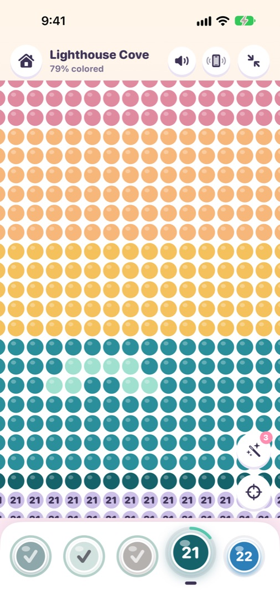

PencilPop
Color by Number · iPhone & iPadTap, pop, and watch it come alive.
Match the numbers, fill the squares, and turn a grid into a painting, one relaxing tap at a time.



Easy to Expert
94 pictures on four levels, from bold 16×16 sketches to detailed 96×96 paintings.
Glossy beads
Zoom in and every square turns into a round, shiny bead that pops when you fill it.
Paint in one stroke
Touch and hold, then slide to paint a whole row. The Magic Wand fills an entire area at once.
Find the last squares
One tap on Find zooms right to the squares you missed.
Timelapse videos
Watch your picture paint itself again, then share it as a video.
For the whole family
Quick pictures for a short break, long calming paintings for a quiet evening.
Works offline
No account and no sign-in. Your progress stays on your device.
Save your art
Save finished pictures to Photos as crisp PNG images.
Support
How do Magic Wands work?
Tap the wand, then tap an area: every connected square with that number fills at once. You start with 3; watch a short video for 3 more. With “Remove Ads”, wands are unlimited.
How do I unlock more pictures?
Seven pictures are open from the start. Tap any locked picture to watch a short video, and it stays unlocked forever. The one-time “Remove Ads” purchase unlocks every picture and turns off all ads.
I bought “Remove Ads” but I still see ads.
Open Settings (the gear icon in the gallery), answer the quick math check, and tap Restore Purchases. Make sure you're signed in with the same Apple Account you used to buy it.
Saving to Photos doesn't work.
PencilPop needs permission to add photos. Open the iPhone Settings app → PencilPop → Photos, and choose Add Photos Only.
How do I start a picture over?
Finish screen → Color again restarts that picture. To clear everything, open Settings → Reset Coloring Progress; unlocked pictures stay unlocked.
How do I turn off sounds or vibration?
Use the speaker and vibration buttons at the top of the gallery or coloring screen. Sounds also follow your device's silent switch.
Still need help? Email lumystudios@yahoo.com and we'll get back to you.